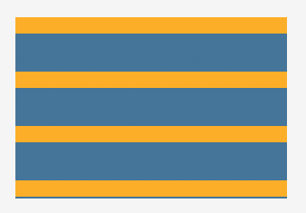
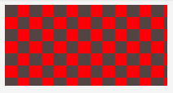
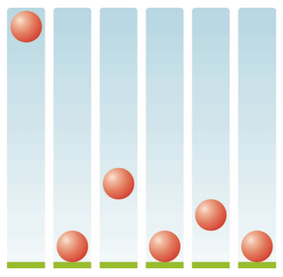
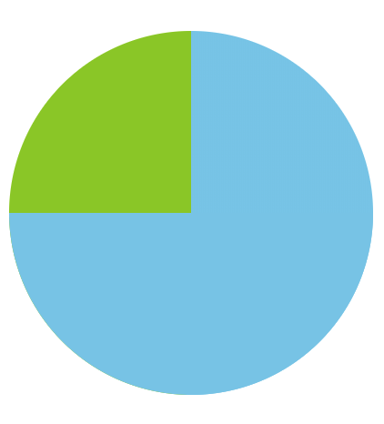
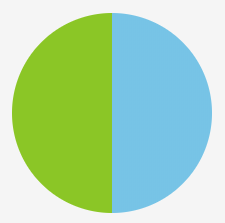
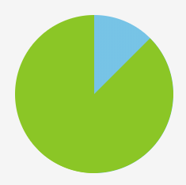
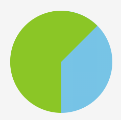

linear-gradient()
linear-gradient() 函数用于创建一个图片， 该图片由两种或多种颜色线性渐变形成。
但是很难想象， 可以通过该函数可以实现多种条纹背景， 甚至饼图、 折角等效果。
条纹背景
通过 linear-gradient() 函数实现这样的条纹效果非常简单：

1 | /* 省略了部分 CSS 代码 */ |
但是， 如果要实现这样的效果， 会不会觉得稍有难度？

1 | div { |
动画
回弹动画
如图所示， 在实现一个动画时， 回弹效果可以让动画更真实：

这个效果的关键在于， 回弹时的曲线函数， 与正向播放时的相反：
1 | @keyframes bounce { |
饼图 animation + linear-gradient() + 伪元素
通过 animation 结合 linear-gradient() 可以实现饼图：

实现起来稍微有点复杂， 所以分几步完成：
- 1.先实现一个圆：
1 | div { |
- 2.利用
linear-gradient()实现右边一半为另一种颜色：
1 | div { |
先看看当前的效果：

- 3.实现 0 - 50% 的加载？ 需要利用 transform 和伪元素：
1 | div { |
目前实现 0-50% 的加载没有问题， 但是在实现 50%-100% 时是无法正确显示的：


- 4.利用
animation解决问题：
1 | div::before { |
最后， 只需要调节 animation-delay 的值， 就可以调节百分比了， 如 animation-delay: -20s 就对应 20%。